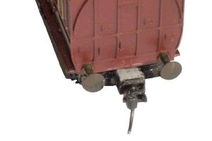
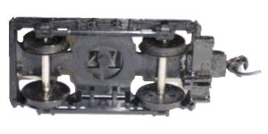
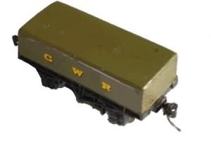
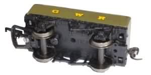

NAVIGATION
TOP of Page
MAIN Page
HOME Page
KADEE COUPLER
Information
Bogie Mount
Van Mount
|
Mounting Kadee Couplers
Much has been discussed about using the proprietory Kadee coupler on British OO gauge rolling stock.
Kadees are best used in situations requiring a lot of shunting - on a string of small open vans is
an ideal setup. My experience with mounting Kadees on the bodies of English OO scale bogied stock
is fraught with problems. The bogies are are too close to the end of the carriage, and the bottom
mounting plane of the body is too high. To alleviate this I have found a method of mounting the Kadee
coupler on the bogie, using a standard Kadee No5 coupler.
The Kadee coupler height is universal and applies equally to both OO and HO gauges. Always use the
Kadee Coupling Height Gauge to get the correct coupler height, otherwise the couplers will not work
effectively or couple correctly to other Kadee coupled rolling stock. Bend the uncoupling arm lightly
to just slide over the near track height arm height plate. Kadee make a special pair of pliers for
this purpose.
Another concept overlooked by British modellers is that properly mounted Kadees can traverse Marklin
stud contact track - Thus I can have my NSW carriages hauled by one of my two favourite 38 class - in
this case a Marklin ex Prussian P8 with a tender mounted Kadee.
TOP
MAIN
HOME
Bogie Mounted Kadee couplers
|


|
In this setup a Hornby R333 3rd/Guards has had its' bogie cut away from the top to create
a mounting plane for the Kadee. Refer to the bottom view for the section of the bogie that
remains. The coupler is top mounted onto this plane. A small keeper plate is fabricated
from Plastistruct, and glued onto the top of the coupler to keep it in place.
Paint the keeper plate black to disguise it. The coupler proper protrudes proud of the
couplers to effect a good coupling distance - refer to the mounted view. The bogie mounted
coupler works perfectly for the smallest trainset curves. You should find you need no
packing or extra shaving of the mounting surface with this bogie.
|
TOP
MAIN
HOME
Van Mounted Kadee Couplers
|


|
A Matching Van enables coupling of, say, a standard OO locomotive to a string of Kadee
coupled vans. This van has a standard OO coupler on one end and a Kadee coupler on the
other. A Lima HO scale van had its' superstructure removed and a small Plastistruct body
built up to resemble a G.W.R. shunting van. Both the original European couplers were
removed, and a spare Bachmann OO coupler mounted at one end on a built up base.
A Kadee No5 was mounted directly onto the bottom of the van with no packing - refer to
the bottom view. The buffers were removed for a correct coupling distance - refer to
the mounted view, and was found to work perfectly with a train of vans even on the
smallest radius trainset curves. This setup works well with various locomotive tenders
and on other vans such as the Hornby Iron Ore Tippler R6000 and the Bachmann 20ton Brake
Van 37-526, both of which required packing.
|
TOP
MAIN
HOME
|